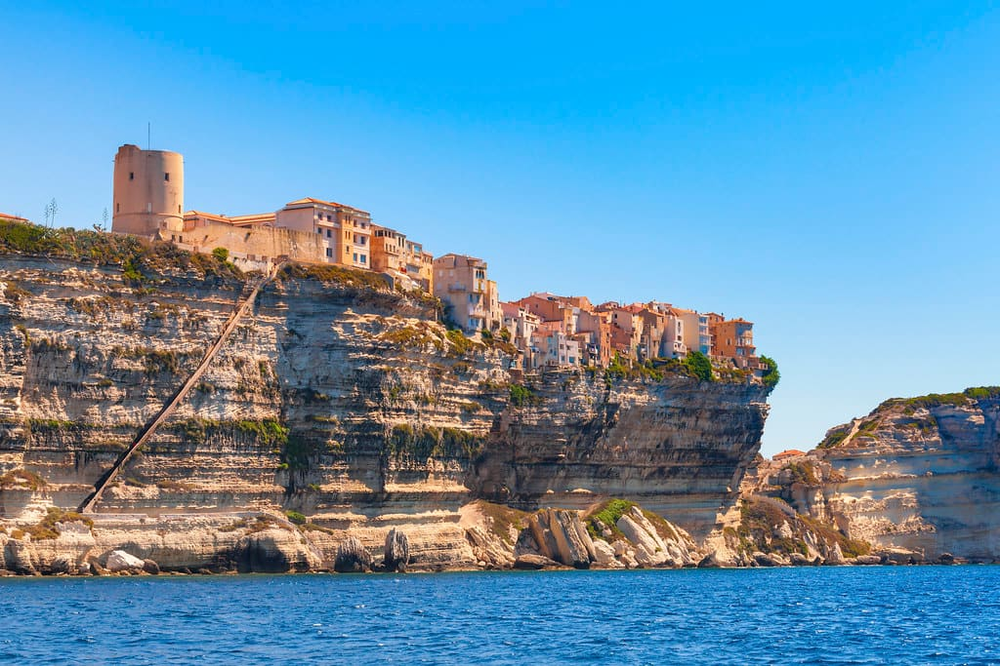
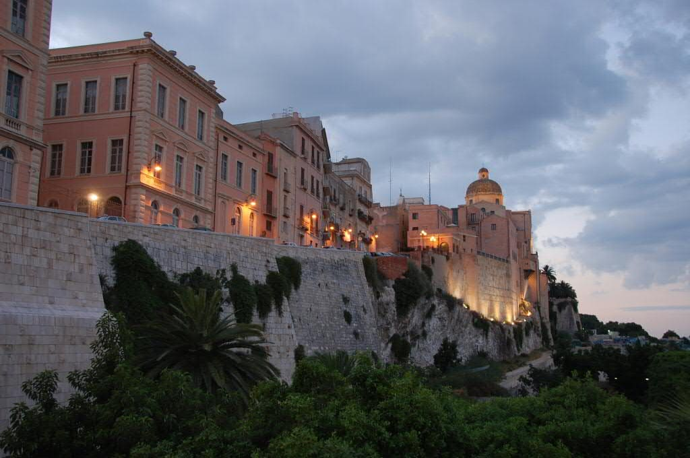
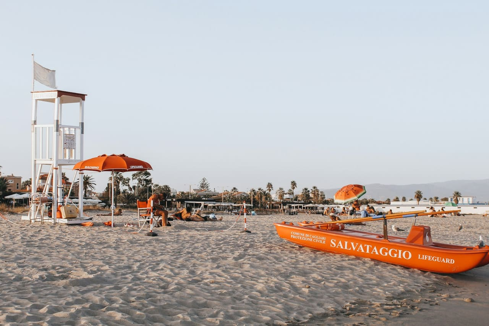
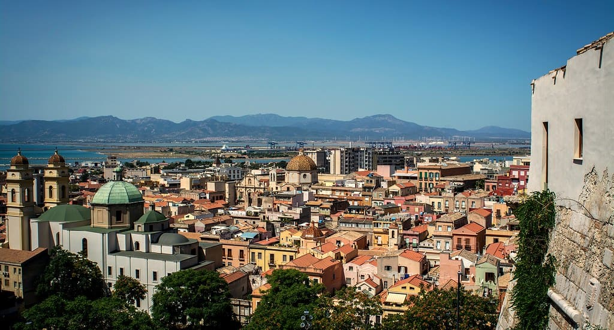

0
Sun - 6/6/2027
Depart Pittsburgh after work
Overnight travel
Airport meals and ground transport
GatewayPIT→gateway→FSC
Confirm a protected 2027 itinerary
Overnight flight
Build-time Trip Composer
11 nights · 6/6/2027 to 6/19/2027 · estimated 34/50


Estimated scorecard
PTO: 9 days. These axes are deterministic estimates, not audited evidence.
Day by day
Sun - 6/6/2027
Overnight travel
Airport meals and ground transport
Confirm a protected 2027 itinerary
Mon - 6/7/2027
Change-of-scenery ferry beat
Est. ~$260 · ferry + meals
Cross the Strait of Bonifacio, settle near the old town, and keep the first evening focused on the cliff-top lanes and harbor.
2026 route: 50-60 min. Typical family foot-passenger round trip budget €220-360; with car often €450-650+ round trip, and rental-company permission is the gating item.
78°F day / 63°F night. Sea 72-74°F — the crossing itself is short; beach swimming waits for Corsica.
Family & picky-kid eats



Old town free. King Aragon Steps often about €5 adult / €2.50 child; tourist train around €6-8 pp.
78°F day / 63°F night. Sea 72-74°F — good for swimming in nearby bays; old town is the town/history beat.
Family & picky-kid eats
Tue - 6/8/2027
Corsica swim day
Est. ~$220 · beach transport/boat + meals
Without a Corsica rental, use taxi/boat and stay focused. If renting locally, book early; supply near Bonifacio is thin.


Beach free; parking often €5-10/day in season; taxi or short rental car day if staying car-free.
78°F day / 63°F night. Sea 72-74°F — sheltered water and pale sand make this the Corsica kid-swim day.
Family & picky-kid eats
Wed - 6/9/2027
Weather and energy buffer
Flexible
Keep this day open for weather, rest, or a favorite Corsica repeat.
Thu - 6/10/2027
Weather and energy buffer
Flexible
Keep this day open for weather, rest, or a favorite Corsica repeat.
Fri - 6/11/2027
Ferry transfer
Transfer included in corsica->sardinia budget
Return the first car if required, cross by ferry, collect the next car, and keep the arrival evening light.
Sat - 6/12/2027
Cliffs, cave, beach reset
Est. ~$190 · cave + meals
Do the cave early, then make the afternoon about water. If the sea is rough, use the stair route or skip the cave and beach-hop.


Viewpoints free. Neptune's Grotto: roughly €14 adult / €10 child plus boat or 654-step Escala del Cabirol.
79°F day / 64°F night. Sea 72-73°F — pleasant in sheltered coves, but the cave itself is not a swim stop.
Family & picky-kid eats
Sun - 6/13/2027
Big north-coast beach or colorful town
Est. ~$150 · permits/parking + meals
La Pelosa is the north-coast swim card. Book the slot once 2027 rules open; bring required mats under towels.


Timed-entry beach rules usually run June-Oct: cap around 1,500/day, ticket about €3.50 pp age 12+, mat under towels required; parking extra.
79°F day / 64°F night. Sea 72-73°F — shallow turquoise water is one of the best kid-swim setups in north Sardinia.
Family & picky-kid eats
Mon - 6/14/2027
Signature hike + real swim
Est. ~$130 · permits + meals
This is the hardest day in the plan. Moving one day earlier keeps the same weather band, but it makes the early start even more important for heat and kid patience.


2026-style rules: book ahead via Heart of Sardinia; typical hike ticket €7 pp, daily cap around 250, trail opens 7:30 and closes 14:00; beach stay until late afternoon.
81°F day / 66°F night. Sea 73-75°F — clear and swimmable, but the hike out is hot; start early with the 8-year-old.
Family & picky-kid eats
Tue - 6/15/2027
Peak water day
Est. ~$360 · boat + meals
Book a smaller boat from Santa Maria Navarrese or Arbatax and confirm which beaches require landing reservations under 2027 rules.


Shared boat from Arbatax/Santa Maria Navarrese often €45-75 pp; beach landing/access QR rules apply to regulated Baunei beaches.
81°F day / 66°F night. Sea 73-75°F — best water day of the route; bring water shoes for pebbles.
Family & picky-kid eats
Wed - 6/16/2027
Nature without overcooking the kids
Est. ~$140 · short hike + meals
Keep this easier than a full Selvaggio Blu-adjacent day. Heat and cliff exposure matter more than mileage.


Gorropu access commonly ~€6 pp; jeep shuttles extra. For kids, do a shorter canyon-edge version, not an all-day sufferfest.
82°F day / 65°F night. Sea 73-75°F — not a swim stop; pair with a late pool or Santa Maria Navarrese beach reset.
Family & picky-kid eats
Thu - 6/17/2027
City + beach convenience
Est. ~$150 · fuel + dinner
Cagliari gives the trip a town-and-food finish while keeping Poetto beach minutes away.



Old town free. Bastione free; towers/museums usually €3-10 pp. Parking garages near Marina/Castello €1.50-2.50/hr.
84°F day / 68°F night. Sea 73-75°F — south coast is reliably warm enough for kid swimming.
Family & picky-kid eats
Fri - 6/18/2027
Return flight
Airport meals and transfers
Confirm a protected 2027 itinerary
Sat - 6/19/2027
Trip complete
—
Keep the next full day protected in Pittsburgh.
Route map
Destination and gateway points inherited from the source legs.
Estimated budget
| Corsica lodging | $760–$1240 |
|---|---|
| Corsica car/local transport | $350–$550 |
| Corsica food | $775–$1050 |
| Corsica activities | $350–$700 |
| Mid-trip transfer | $250–$550 |
| Sardinia lodging | $1260–$2030 |
| Sardinia car/local transport | $520–$800 |
| Sardinia food | $1200–$1640 |
| Sardinia activities | $550–$1000 |
| PIT outbound gateway | $2800–$4200 |
| PIT return gateway | $2800–$4200 |
Transfer watch
Confirm the 2027 ferry day, vehicle rules, and port check-in window.